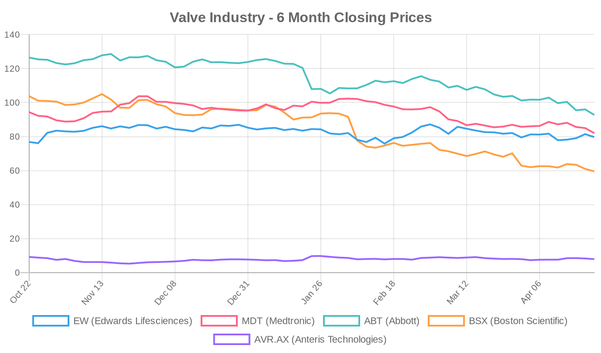
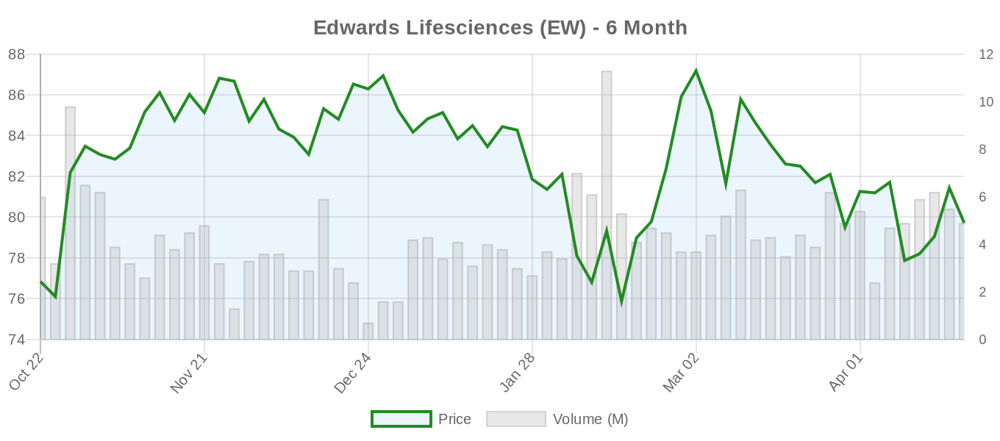
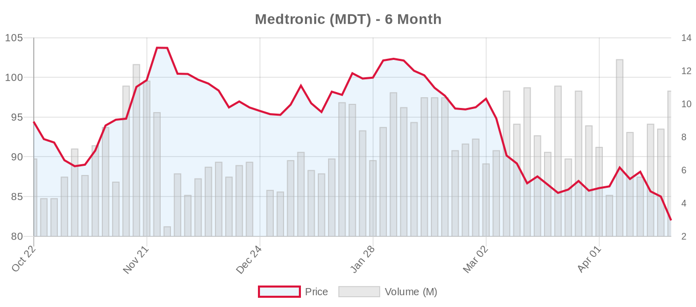
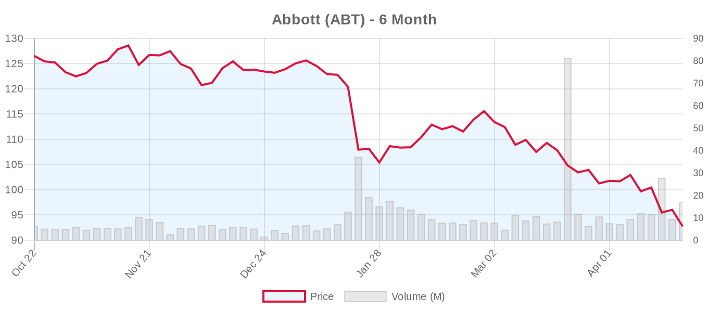
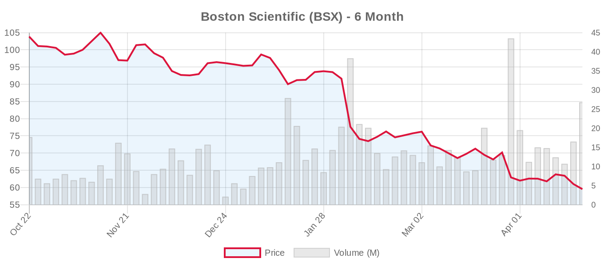
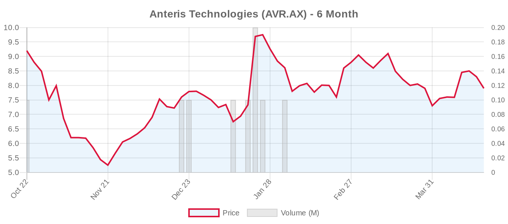

|
||||||||
|
April 22, 2026 By E. Nolan Beckett |
||||||||
|
||||||||
Executive SummaryToday's digest centers on a critical meta-analysis reinforcing that transcatheter edge-to-edge repair (TEER) should not replace surgery for degenerative mitral regurgitation — with higher 1-year mortality and inferior MR reduction compared to surgical repair. A large international registry offers cautiously favorable data on TAVI for younger, low-risk patients with bicuspid aortic valves, though important caveats apply. Meanwhile, a major CENTER2 analysis of nearly 25,000 TAVI patients quantifies the significant mortality and stroke burden imposed by both pre-existing and new-onset atrial fibrillation. On the financial front, all major structural heart stocks sold off sharply, with Edwards Lifesciences reporting Q1 earnings Wednesday and Boston Scientific tomorrow — both in a markedly risk-off environment. For the clinical audience: this is a day to step back and examine foundations. The TEER-vs-surgery meta-analysis from Kurmasha et al. — spanning over 13,000 patients with degenerative MR — arrives at a moment when enthusiasm for transcatheter mitral therapies continues to build, and serves as a sobering reminder that for primary MR, surgical repair remains the gold standard with demonstrably better long-term survival. Separately, the AD-HOC registry's BAV-TAVI data in younger patients will attract attention, but must be read against both ACC/AHA and ESC guidelines that firmly place BAV in surgical territory for low-risk patients. And the CENTER2 AF-TAVI data — the largest such analysis to date — demands we think harder about AF management in the peri-TAVI period. A busy day for anyone who believes the evidence should drive practice, not the other way around. Today's Key Findings
Aortic Valve (TAVR/TAVI)Atrial Fibrillation Portends Worse Outcomes After TAVI: CENTER2 Analysis[NOTABLE] Hemelrijk et al. present a CENTER2 pooled analysis of 23,320 patients from 10 international studies (2007–2022) evaluating the impact of AF on TAVI outcomes. Pre-existing AF was present in 28.2% and was independently associated with higher mortality (adjusted HR 1.39, 95% CI 1.26–1.53) and more strokes in the early post-procedural window (1.6% vs. 1.1%, p=0.004). New-onset AF occurred in 6.2% of patients without prior AF and carried an even stronger mortality signal (adjusted HR 1.75, 95% CI 1.24–2.49), along with higher 1-year stroke (6.1% vs. 3.4%) and major bleeding (12.0% vs. 6.7%). Editorial perspective: This is the largest real-world cohort to date examining AF in the TAVI population, and the findings are clinically actionable. The 6.2% new-onset AF rate — with its striking mortality and stroke associations — raises the question of whether post-TAVI rhythm monitoring should be more systematic, particularly with continuous monitors. Notably, the 2025 ESC guidelines now recognize atrial functional MR as a distinct entity driven by AF; this AF-TAVI nexus deserves the same structured thinking. However, the observational design limits causal inference — patients with AF likely have greater comorbidity burden despite multivariable adjustment. Whether aggressive AF prevention (e.g., prophylactic amiodarone or beta-blockers) or early rhythm control post-TAVI would improve outcomes remains untested. The NCT07519161 trial from Shanghai East Hospital comparing metoprolol vs. amiodarone for post-TAVI AF prevention is directly relevant. Redo-TAVR Coronary Obstruction Risk Heightened in Small Annuli With Self-Expanding ValvesLiccardo et al. publish a post-TAVR CT study of 167 patients evaluating predicted coronary obstruction (CO) risk at redo-TAVR. In patients with small annuli (≤430 mm²), self-expanding valves (SEVs) were associated with dramatically higher CO risk compared to balloon-expandable valves (BEVs) — OR 15.52 at node 6 (p<0.001) and OR 3.13 at node 5 (p=0.03). In non-small annuli, no significant difference between valve types was observed. Editorial perspective: This study is directly relevant to the ESC 2025 emphasis on "lifetime management" and index-procedure planning. As TAVI expands to younger patients, the choice of initial THV has downstream consequences for future reintervention feasibility. The data suggest that in patients with small annuli — disproportionately women — balloon-expandable valves may preserve better redo-TAVR options. However, this is a single-center retrospective CT-based prediction study, not a clinical outcomes analysis. Predicted CO risk is not the same as actual CO events at redo-TAVR. Still, this reinforces the principle articulated in the ESC 2025 guidelines: "careful CT-based anatomical analysis at the index procedure is paramount when life expectancy exceeds assumed valve durability." BAV-TAVI in Young, Low-Risk Patients: AD-HOC RegistryGorla et al. report from the international AD-HOC registry on 980 patients with bicuspid aortic valve stenosis undergoing TAVI, stratified by age and surgical risk. In the youngest, lowest-risk cohort (Group I: <69 years, STS-PROM <4, n=113), technical success was 94.7%, 30-day device success and safety were comparable to older/higher-risk patients, and no cases of severe valve deterioration were observed during follow-up. Freedom from TIA/stroke or HF rehospitalization was actually higher in younger groups (91.1%) than in older patients (81.0%, p=0.006). Editorial perspective: These results will be cited by proponents of expanding TAVI to younger BAV patients, but several critical limitations must be flagged. First, this is a retrospective, non-randomized registry — patients "deemed unsuitable for surgery" represent a highly selected subset, not the general young BAV population. Second, follow-up duration is not specified in the abstract, and BAV durability concerns require 10+ year data; we have none from this cohort. Third, both the ACC/AHA 2020 (Class IIb) and ESC 2025 (Class IIb) rate BAV-TAVI cautiously, noting that BAV patients were excluded from virtually all RCTs comparing TAVI with SAVR. The NOTION 2 trial showed a numerically higher event rate with TAVI in BAV patients (HR 3.8, p=0.07). For young, low-risk BAV patients, SAVR remains the guideline-recommended approach. These AD-HOC data should be considered hypothesis-generating for the small subset of BAV patients with genuine surgical contraindications, not an endorsement of routine BAV-TAVI in the young. Sarcopenia Trajectories Predict Post-TAVR SurvivalZhang et al. present a single-center cohort study of 258 TAVR patients using pectoralis muscle index (PMI) from routine thoracic CT angiography to track sarcopenia changes. Patients with persistent sarcopenia (17.8% of the cohort) had nearly 4-fold higher mortality risk (HR 3.94, 95% CI 1.44–10.80). This is an intriguing concept — using imaging already obtained for TAVR planning to extract frailty biomarkers — though the small, single-center design and relatively young median age (72.9 years) limit generalizability. If validated, longitudinal sarcopenia assessment could inform rehabilitation intensity and prognostic counseling. Cardiac Structural Complications in TAVR: Editorial CommentaryAnderson and Saulat publish an editorial in Circulation: Cardiovascular Interventions highlighting that structural complications in TAVR remain "a persistent challenge in the modern era." While no abstract is available, this commentary likely addresses annular rupture, aortic dissection, coronary obstruction, and conduction disturbances — complications whose incidence has decreased but not disappeared with newer-generation devices and improved technique. This aligns with recent data from the reference literature on TAVR reintervention rates (1.7% at 8 years, but rapidly increasing) and the ongoing need for vigilance even as volumes grow. PCI in TAVR Patients Shows Limited Benefit in FrailtyEMJ reports that percutaneous coronary intervention (PCI) in TAVR patients shows limited benefit in the frail population. This is clinically relevant given that concurrent CAD is common in AS patients and the question of staged PCI vs. TAVR-only strategies remains unresolved. The ESC 2025 guidelines favor TAVI when CAD is non-complex and amenable to PCI, but these data suggest frailty may modify the expected benefit — another reminder that patient selection drives outcomes more than procedural virtuosity. TAVR Costs 4× More Than Surgery in IndiaDeccan Herald reports that TAVR procedures in India cost approximately 4× more than surgical aortic valve replacement, highlighting the global health equity challenge. In many low- and middle-income countries, the cost differential makes SAVR the only viable option for most patients. This underscores that the TAVI-vs-SAVR discussion cannot be separated from economic context — a point the 2025 Accra Declaration on cost-effective cardiac surgery in Africa also emphasizes. Mitral Valve (MitraClip, PASCAL, TMVR)TEER vs. Surgery for Degenerative MR: Meta-Analysis Favors Surgery[NOTABLE] Kurmasha et al. publish a systematic review and meta-analysis with trial sequential analysis comparing TEER with surgical mitral valve repair or replacement (SMVR) for degenerative (primary) MR. Eight studies encompassing 13,308 patients were included. The key findings are unambiguous in their direction:
Editorial perspective: This meta-analysis arrives at the right time. With TEER utilization growing rapidly and the TMVR market reports projecting exponential growth (see news section), it is essential to ground the conversation in evidence. For primary (degenerative) MR in operable patients, both ACC/AHA 2020 and ESC 2025 guidelines are clear: surgical repair is the gold standard (Class I). TEER is reserved for high-surgical-risk patients (Class IIa). This meta-analysis reinforces that hierarchy emphatically — the 82% higher 1-year mortality and inferior MR reduction with TEER cannot be dismissed, even if TEER offers real short-term procedural advantages. However, important caveats: the included studies mix RCTs and observational cohorts, creating heterogeneity in patient risk profiles. TEER patients were likely older and sicker, and even propensity matching cannot fully account for unmeasured confounders. The EVEREST II trial — the only randomized comparison — enrolled patients over a decade ago with first-generation MitraClip technology. The REPAIR-MR trial (NCT04198870) and the PRIMATY trial (NCT05051033), both landmark studies comparing TEER with surgery, will provide the definitive modern answer. Until then, as the meta-analysis authors conclude: "current evidence doesn't support the use of TEER as a substitute for surgery" in operable primary MR patients. Large Annulus and Poor TMVR Outcomes: An Editorial WarningSiki and Kaneko contribute an editorial commentary in the Annals of Thoracic Surgery titled "Large Annulus Equals Poor Outcomes in TMVR: Are We Seeing These Patients Too Late?" While no abstract is available, the title itself encapsulates a recurring concern in the TMVR space: annular sizing challenges, the late-referral problem, and the fundamental question of whether transcatheter mitral valve replacement can overcome the anatomic complexity of the mitral position. The ESC 2025 guidelines rate TMVI for degenerative MS with MAC at Class IIb, acknowledging the high-risk nature of all interventions in this population. TMVR Market ProjectionsOpenPR reports that the TMVR market is "going to boom." While market enthusiasm is understandable given the unmet need, today's meta-analysis and editorial commentary serve as important counterweights: the technology must prove superiority or non-inferiority to surgery in appropriate populations before market enthusiasm should translate to clinical adoption. The Medtronic Intrepid TMVR Pivotal trial (n=1,056, recruiting) remains the key dataset to watch. Surgical vs. Transcatheter ComparisonsToday's TEER-vs-surgery meta-analysis for degenerative MR (detailed above) is the most significant head-to-head comparison. The core message across today's literature is one of appropriate restraint: transcatheter technologies offer genuine advantages in specific populations, but the surgical alternative remains superior for primary MR in operable patients and for BAV-associated AS in younger patients. This aligns with a broader theme in the reference literature. The Kurmasha meta-analysis echoes findings from the "Hazards of Indication Creep for TAVR" commentary, which warned that meta-analyses suggesting TAVR mortality advantages may be influenced by inconsistent risk stratification. In both the aortic and mitral spaces, transcatheter therapies have clear roles — but those roles are defined by patient risk, anatomy, and expected longevity, not by procedural convenience or market momentum. Device & TechnologyREVIVENT-TC System for Ischemic LV Reconstruction: Literature ReviewKakoudaki et al. present a systematic review of 276 patients across 8 studies evaluating the Revivent-TC transcatheter ventricular enhancement system as a less invasive alternative to surgical ventricular reconstruction (SVR). Procedural success was high (96–100%), with mortality of 2.5% and significant improvements in LVEF and LV volumes persisting up to 5 years. However, the prospective ALIVE trial — the only controlled comparison — did not demonstrate significant clinical benefit over guideline-directed medical therapy (win ratio 1.13, p=0.32), with cardiovascular mortality and HF hospitalizations numerically favoring the control group. Editorial perspective: This is a cautionary tale relevant to the entire structural heart field. Surrogate endpoints (LV volumes, LVEF) improved, but the only controlled trial showed no hard clinical benefit. Until randomized data demonstrate improvement in mortality or HF hospitalizations, the Revivent-TC remains investigational. The pattern — encouraging observational data followed by neutral or negative RCTs — should keep us appropriately humble about all emerging structural heart technologies. Transcatheter Sinus Venosus Defect Repair With 12-Zig CP StentFuensalida et al. describe early multicenter experience (n=5) using a 12-zig covered Cheatham-Platinum stent for transcatheter repair of sinus venosus defects with large SVC-RA junctions. All procedures were technically successful with symptomatic improvement. While this addresses a genuine unmet need (surgical SVD repair carries significant morbidity), the sample size of 5 patients limits any conclusions. This remains a proof-of-concept for highly selected patients. Industry & MarketEdwards Lifesciences Q1 Earnings PreviewYahoo Finance reports that Edwards Lifesciences will report Q1 2026 earnings on April 23. Consensus estimates: EPS $0.73, revenue $1.60B. Key metrics to watch: TAVR volume trends (especially geographic mix following the ESC 2025 age threshold shift to ≥70), TMTT (transcatheter mitral and tricuspid therapies) segment growth, and any commentary on SAPIEN 3 Ultra post-market surveillance or EVOQUE tricuspid replacement commercial trajectory. The 2025 ESC guidelines' Class IIa recommendation for transcatheter tricuspid therapy could be a tailwind for Edwards' EVOQUE/PASCAL programs. Institutional Interest in EdwardsMarketBeat reports Zurcher Kantonalbank purchased 23,305 shares of Edwards Lifesciences, reflecting continued institutional confidence ahead of earnings despite the broader market downturn. Financial AnalysisToday was a rough session for structural heart equities, with all five tracked companies declining in a broad market selloff. The most notable move is Boston Scientific (BSX), which reports Q1 earnings tomorrow (April 22) and has experienced a punishing 42.7% decline over six months — a far steeper drawdown than its structural heart peers. While BSX's decline reflects broader medtech headwinds (tariff concerns, procedure volume uncertainty, valuation compression), the magnitude is striking for a company with a "strong buy" consensus. Edwards Lifesciences (EW) enters its April 23 earnings report having outperformed the group over six months (+3.7%), reflecting investor conviction in its TAVR franchise durability and TMTT growth optionality. The key question Wednesday will be whether the ESC 2025 guideline changes — particularly the lowered TAVI age threshold to ≥70 and the Class IIa tricuspid recommendation — are translating into volume acceleration, especially in European markets. Abbott (ABT) has declined 26.7% over six months, reflecting both structural heart and broader portfolio pressures. Abbott's TriClip franchise stands to benefit from the ESC's Class IIa tricuspid recommendation, but execution matters — and the TRILUMINATE long-term data will be critical. Medtronic (MDT) dropped 3.5% today and is down 13.2% over six months. The Evolut Low Risk long-term follow-up data and Intrepid TMVR pivotal trial enrollment remain the key catalysts. The ESC 2025 guideline's endorsement of TAVI for ≥70 with tricuspid AV could benefit Evolut volumes, but Medtronic must demonstrate competitive performance against Edwards' SAPIEN platform. The broad selloff creates an interesting setup: two major earnings reports in the next 48 hours (BSX tomorrow, EW Wednesday) will either confirm fears about slowing structural heart growth or provide a buying opportunity for investors who believe the secular tailwind of an aging population with valvular heart disease remains intact. Valve Industry Stocks Edwards Lifesciences (EW)
Medtronic (MDT)
Abbott (ABT)
Boston Scientific (BSX)
Anteris Technologies (AVR.AX)
Private companies of note: JenaValve Technology (pure-play aortic regurgitation TAVR), J Valve Technology (Chinese AR/AS TAVR platform), and Meril Life Sciences (Myval THV, recently validated in the LANDMARK trial) remain privately held with no public stock data available. Market Outlook: The structural heart sector enters a critical 48-hour window with two major earnings reports. The ESC 2025 guideline expansion of TAVI indications (≥70 age threshold, Class IIa tricuspid therapy, Class I TEER for secondary MR) represents a meaningful secular tailwind that should, in theory, support volume growth for all major players. However, macroeconomic headwinds (tariffs, recession fears, FX exposure) are dominating near-term price action. The key question: will Q1 earnings demonstrate that structural heart procedure volumes are resilient to the economic cycle, or will volume softness in some geographies validate the selloff? Edwards' report Wednesday will provide the clearest read-through. Clinical Trial UpdatesAortic Valve Trials
Mitral Repair Trials
Mitral Replacement Trials
Tricuspid Repair Trials
Tricuspid Replacement Trials
Imaging & Diagnostics Trials
Social & Conference HighlightsNo major conference presentations or notable social media discussions today. The structural heart community is focused on the upcoming Edwards Lifesciences (April 23) and Boston Scientific (April 22) earnings calls, which often include forward-looking commentary on procedural volumes, pipeline milestones, and regulatory updates that move the field. Looking ahead: Boston Scientific reports Q1 earnings tomorrow, followed by Edwards Lifesciences on Wednesday — two reports that will set the tone for structural heart equities through the spring. On the clinical side, today's data reinforces a theme The Valve Wire has emphasized: transcatheter technologies are extraordinary tools in the right hands, for the right patients. The evidence must lead the indication, not the other way around. — E. Nolan Beckett, The Valve Wire |
||||||||
|
|
||||||||
|
||||||||
|